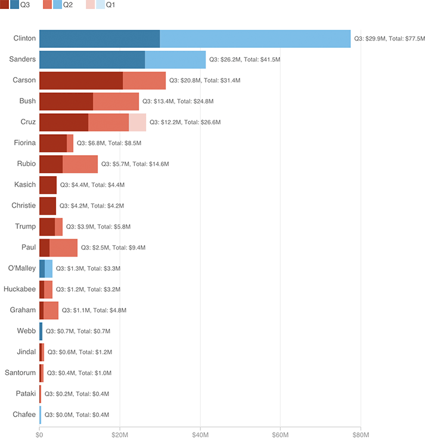

Clinton started off this cycle as the dominant campaign fundraiser, which means she has by far raised the most money altogether. But last quarter, the fundraising pace evened out.

Notes
Does not include money transferred to Rubio's presidential campaign from his Senate campaign.